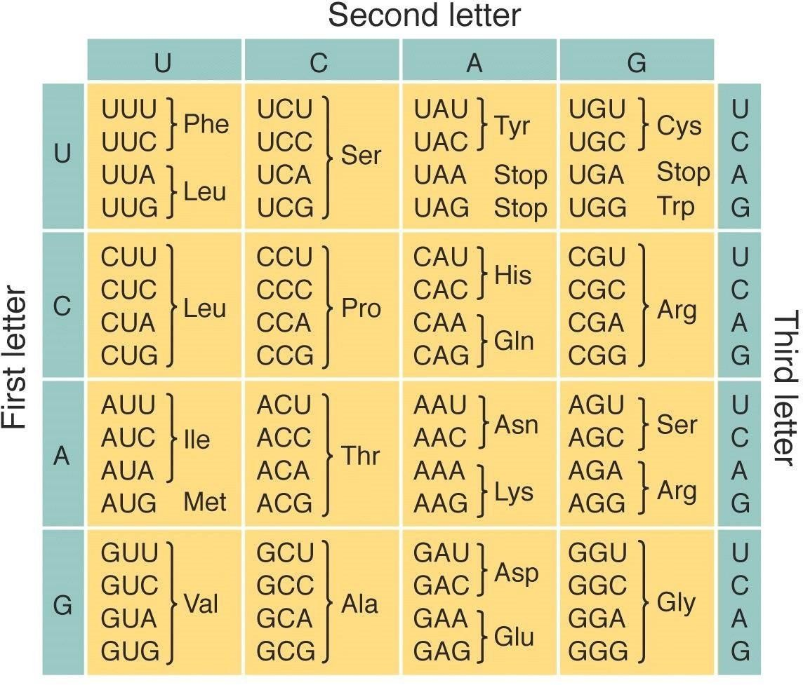
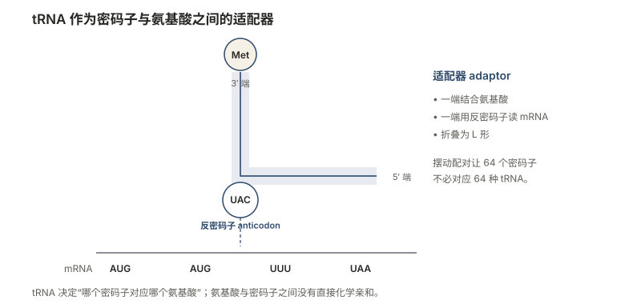
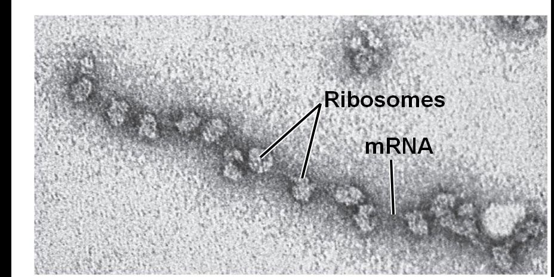

BIO103 · 第 13 章
翻译
Translation
虚线下划线为术语；悬停查看中文、英文与释义，完整词典见“术语”。
本章目录
本讲从遗传密码的编排讲起，依次说明 tRNA 的适配器作用与摆动配对、核糖体的催化功能、起始与终止的机制，最后系统比较原核与真核的翻译。
本章要点
- 遗传密码是三联体密码：4 种碱基取 2 个只有 16 种组合，不足以编码 20 种氨基酸；取 3 个有 64 种，足够且有冗余。
- AUG 是起始密码子并编码甲硫氨酸；UAA、UAG、UGA 是终止（无义）密码子。
- 密码子具有简并性、通用性、无逗号、不重叠四个特点；mRNA 有三个阅读框，通常只用其中一个。
- tRNA 是 L 形适配器：反密码子与密码子互补，3′ 端接受氨基酸；摆动配对使 64 个密码子不需要 64 种 tRNA。
- 原核起始为 fMet、依赖 Shine-Dalgarno 序列、需 3 个起始因子；真核为 Met、依赖 5′ 帽扫描与 Kozak 序列、需十余个 eIF。
- 终止由释放因子识别终止密码子，水解肽酰-tRNA 释放多肽；翻译速率受起始步骤限制。
13.1 遗传密码：三联体与 64 个密码子
遗传信息从 DNA 到 mRNA 再到蛋白质，字母表从 4 种碱基变成 20 种氨基酸。把 4 种碱基组合成氨基酸的规则就是遗传密码genetic code。mRNA 被按核苷酸三联体逐个阅读，每个三联体称为一个密码子codon。
为什么必须是三碱基？讲义用组合数论证：
| 每个密码子的碱基数 | 组合数 | 是否够编码 20 种氨基酸 |
|---|---|---|
| 1 | 4 | 不够 |
| 2 | 4 × 4 = 16 | 不够 |
| 3 | 4 × 4 × 4 = 64 | 足够且有冗余 |
64 个密码子中，61 个编码氨基酸，3 个是终止信号。因此密码子数多于氨基酸数，必然出现“多个密码子编码同一氨基酸”的冗余，这正是简并性的来源。AUG 既编码甲硫氨酸，又是起始信号；在原核中还有少量替代起始密码子，例如 83% 用 AUG、14% 用 GUG、3% 用 UUG。

L16 p.2–4
13.2 遗传密码的特性与阅读框
遗传密码有四个基本特性：
- 简并性degeneracy：多数氨基酸有多个密码子，编码同一氨基酸的密码子互为同义密码子（synonyms）。
- 通用性universality：一个物种中的密码子在另一物种中编码同一氨基酸，仅有少数例外（如人线粒体）。
- 无逗号（commaless）：密码子连续排列，中间没有分隔符。因此 ATGAAATCC 应读作 ATG AAA TCC，而不是 ATG, AAA, TCC 那样随意断句。
- 不重叠（non-overlapping）：相邻密码子不共享碱基，每个碱基只属于一个密码子。
由于密码子不重叠且无逗号，同一段 mRNA 从不同起点开始读，会得到三个不同的阅读框reading frame，翻译出三条完全不同的蛋白序列。除极少数例外，细胞只使用其中一个阅读框；蛋白质合成装置（rRNA）必须能够确定并使用正确的读框。若读框选错，得到的将是无意义的“nonsense”蛋白。
这解释了为什么移码突变（插入或缺失非 3 倍数个碱基）后果严重：它把突变点之后的整个读框换掉，而不只是改变一个氨基酸。
L16 p.5–6
13.3 翻译机器与 tRNA 的适配器作用
翻译需要七类组分：mRNA（模板）、20 种氨基酸（原料）、tRNA（搬运工具）、氨酰-tRNA 合成酶（给 tRNA 装载氨基酸）、核糖体（催化场所）、起始因子与延伸因子（辅助各阶段）、释放因子（终止）。
每种生物都有多种 tRNA；几种携带不同反密码子的 tRNA 可以携带同一种氨基酸。反密码子anticodon与 mRNA 的密码子互补，因此 tRNA 决定了“哪个密码子对应哪个氨基酸”。所有 tRNA 都有碱基配对的区域与三个环，折叠成 L 形，充当氨基酸与密码子之间的适配器adaptor：一端接受氨基酸，另一端用反密码子读取 mRNA。

绘图提示词
Clean vector schematic of tRNA function: an L-shaped tRNA with its anticodon loop base-paired to a codon on a horizontal mRNA, and its 3' acceptor end carrying a specific amino acid; a second panel shows aminoacyl-tRNA synthetase attaching the correct amino acid to the tRNA. Flat 2D, thin 1.5 px strokes, muted slate blue and warm grey palette, white background, English labels, no cartoon, no gradient, no shadow.
L16 p.9–10
13.4 摆动配对与氨酰-tRNA 合成酶
如果每个密码子都需要一种专用 tRNA，细胞就要有 61 种 tRNA。实际数量远少于此，原因在于摆动配对wobble：反密码子的第三位（即 5′ 端那一位）在空间上不受严格限制，可以“摆动”，与密码子第三位上嘌呤或嘧啶中的任一成员配对。
例如反密码子上的 G（双环嘌呤）既可配对密码子上的 U，也可配对 C。某些摆动位点甚至可以与四种碱基中的任何一种配对。这样，一个 tRNA 就能识别多个同义密码子，使翻译只需少于 64 种 tRNA 即可完成。
第二项关键组分是氨酰-tRNA 合成酶aminoacyl-tRNA synthetase。它负责把正确的氨基酸接到对应的 tRNA 上，形成氨酰-tRNA。这一步决定了“氨基酸身份”与“反密码子身份”的对应关系，是翻译保真的关键节点：若装载错误，核糖体无法察觉，会把错误的氨基酸掺入蛋白。
L16 p.12–13
13.5 核糖体的功能与肽键形成
核糖体不是被动的支架，它承担五项功能：
- 结合 mRNA，使密码子能与 tRNA 的反密码子高保真地配对。
- 在原核中，小亚基含有一段特定的 rRNA 序列，能结合起始密码子上游的序列，使进入的氨酰-tRNA 正确定位，从而起始翻译。
- 催化肽酰-tRNA 与进入的氨酰-tRNA 之间形成肽键。
- 催化移位（translocation）：把新延伸的肽酰-tRNA 与 mRNA 相对移动一个密码子，使核糖体能够依次读取下一个密码子。
- 介导非核糖体蛋白因子（起始、延伸、终止因子）与核糖体的相互作用。
肽键形成的本质是肽酰-tRNA 上肽链的羧基与进入的氨酰-tRNA 上氨基酸的氨基发生缩合，释放水。催化活性来自核糖体大亚基的 rRNA，而不是核糖体蛋白——这说明核糖体的催化核心是 RNA。
肽酰-tRNA 结合在核糖体的 P 位；进入的氨酰-tRNA 到达相邻的位点，肽键形成后核糖体发生移位，使新延伸的肽酰-tRNA 占据 P 位，空载的 tRNA 随之离开。延伸循环就是“进入 → 成键 → 移位”的重复。

L16 p.14, p.19
13.6 起始：原核与真核的差异
起始是翻译的限速步骤，也是调控最集中的阶段。原核与真核在此差别最大。
原核的第一个氨基酸是甲酰甲硫氨酸formylmethionine (fMet)：起始 tRNA 携带的甲硫氨酸被甲硫酰-tRNA 转化酶加上甲酰基。起始密码子为 AUG 时，核糖体小亚基通过 rRNA 与起始密码子上游的 Shine-Dalgarno 序列Shine-Dalgarno sequence配对，把核糖体正确定位，因此原核选择“哪一个 AUG”取决于它与该序列的距离。
真核的第一个氨基酸是甲硫氨酸（Met）。真核 mRNA 没有 Shine-Dalgarno 序列，核糖体先结合 5′ 帽，再沿 mRNA 向 3′ 方向扫描，遇到第一个 AUG 即起始。该 AUG 通常处于一个优化序列环境，称为 Kozak 序列Kozak sequence，可增强其被识别为起始位点的效率。
因子数量也不同：原核起始只需 3 个起始因子（IF1、IF2、IF3），真核需要十余个（eIF）。此外原核 mRNA 常为多顺反子，一条 mRNA 编码多个多肽；真核 mRNA 通常为单顺反子，只编码一条多肽。
Clean vector side-by-side diagram of translation initiation: left prokaryotic, small ribosomal subunit bound to the Shine-Dalgarno sequence upstream of AUG, initiator fMet-tRNA in the P site; right eukaryotic, small subunit bound to the 5' cap and scanning along the mRNA until the first AUG in a Kozak sequence, initiator Met-tRNA in the P site. Flat 2D, thin 1.5 px strokes, muted slate blue and warm grey palette, white background, English labels, no cartoon, no gradient, no shadow.
L16 p.16–18
13.7 终止与释放因子
当核糖体读到 UAA、UAG 或 UGA 时，没有对应的 tRNA 能进入 A 位，翻译进入终止阶段。此时释放因子release factor识别终止密码子并结合到 A 位，触发肽酰转移酶中心水解肽酰-tRNA 与多肽之间的酯键，把完成的多肽从 P 位的 tRNA 上切下。
E. coli 有三种释放因子：
- RF1：识别 UAA 与 UAG；其作用方式模拟 tRNA，激活肽酰转移酶以水解已完成的多肽。
- RF2：识别 UAA 与 UGA。
- RF3（核糖体释放因子）：不识别任何终止密码子，但刺激随后的终止事件，使核糖体解离。
注意 RF1 与 RF2 的识别范围有重叠：两者都识别 UAA，但分别识别 UAG 与 UGA。真核只需一个释放因子 eRF1 即可识别三个终止密码子。
L16 p.21–23
13.8 原核与真核翻译的系统比较
把前面的差异汇总，可得到一张完整的对照表：
| 维度 | 原核 | 真核 |
|---|---|---|
| 核糖体组成 | 70S（30S + 50S） | 80S（40S + 60S） |
| 转录与翻译 | 可同时进行（同一区室） | 被核膜分开，时间与空间上分离 |
| mRNA 类型 | 多顺反子（来自操纵子） | 单顺反子 |
| 起始密码子选择 | 位于核糖体结合序列下游 | AUG 位置更可变，靠扫描与 Kozak 序列 |
| 起始因子 | 3 个（IF1、IF2、IF3） | 多于 9 个（eIF） |
| 起始 tRNA | tRNA-fMet | tRNA-Met |
| mRNA 初始结合 | 需要核糖体结合序列 | 需要 7-甲基鸟苷帽 |
| 终止因子 | 3 个（RF1、RF2、RF3） | 1 个（eRF1） |
| 翻译速率 | 15–20 aa/s | 1–2 aa/s，较慢 |
为什么原核可以“边转录边翻译”？因为转录与翻译发生在同一细胞区室，且两者都沿 5′→3′ 方向进行，核糖体可以附着在尚未转录完的 mRNA 上立即开始翻译。真核则因核膜的存在，转录在核内、翻译在细胞质，必须先生成成熟 mRNA 并输出，两个过程在空间与时间上都被分开。
最后一点：蛋白质合成的速率由起始步骤控制。起始是四个阶段中最主要被调控的环节，因此改变起始因子的活性或可用性，就能整体改变细胞的蛋白合成水平。
L16 p.24–27